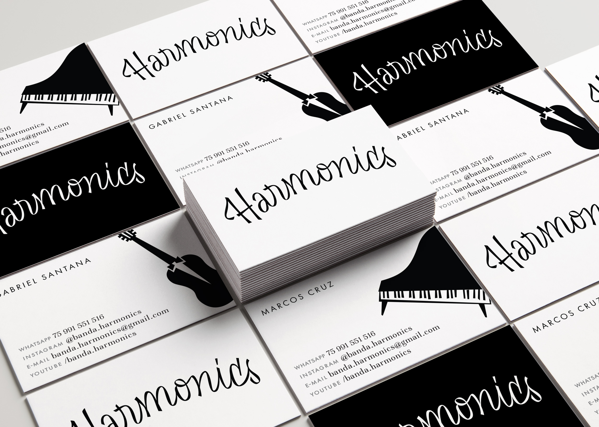
Para trazer um pouco de saudosismo, quando temos a impressão de que as coisas eram mais bonitas e mais alegres, a identidade para a banda cerimonial Harmonics foi inspirada nos letterings dos anos 50.
O logotipo traz uma curvatura alegre com contraste irregular no seu traçado, imitando a escrita de um marcador e trazendo ainda mais movimento. O floreio na letra H ainda faz alusão à notação musical. As ilustrações, também inspiradas nos anos 50, fazem a junção entre instrumentos musicais e objetos comumente encontrados em casamentos, como ternos, vestidos, bolos e espumantes.
PT / EN
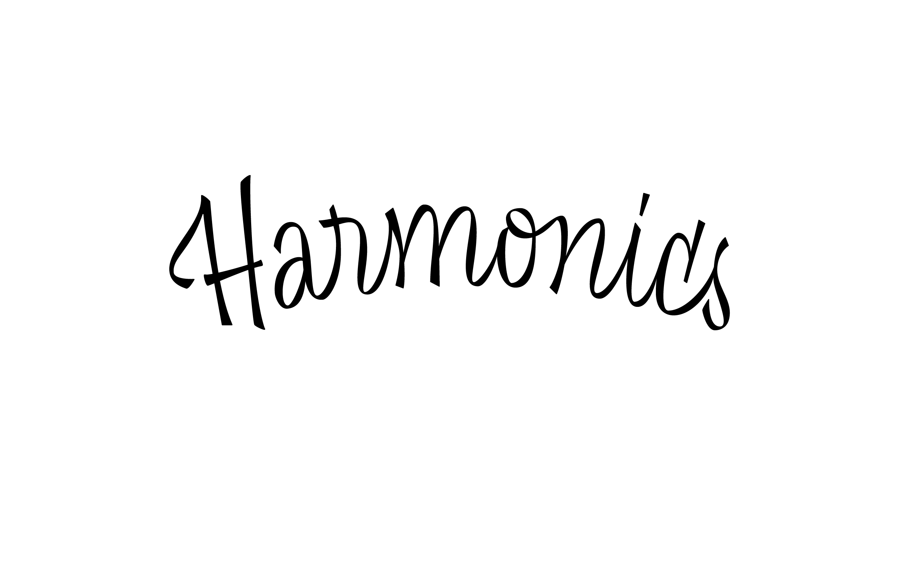
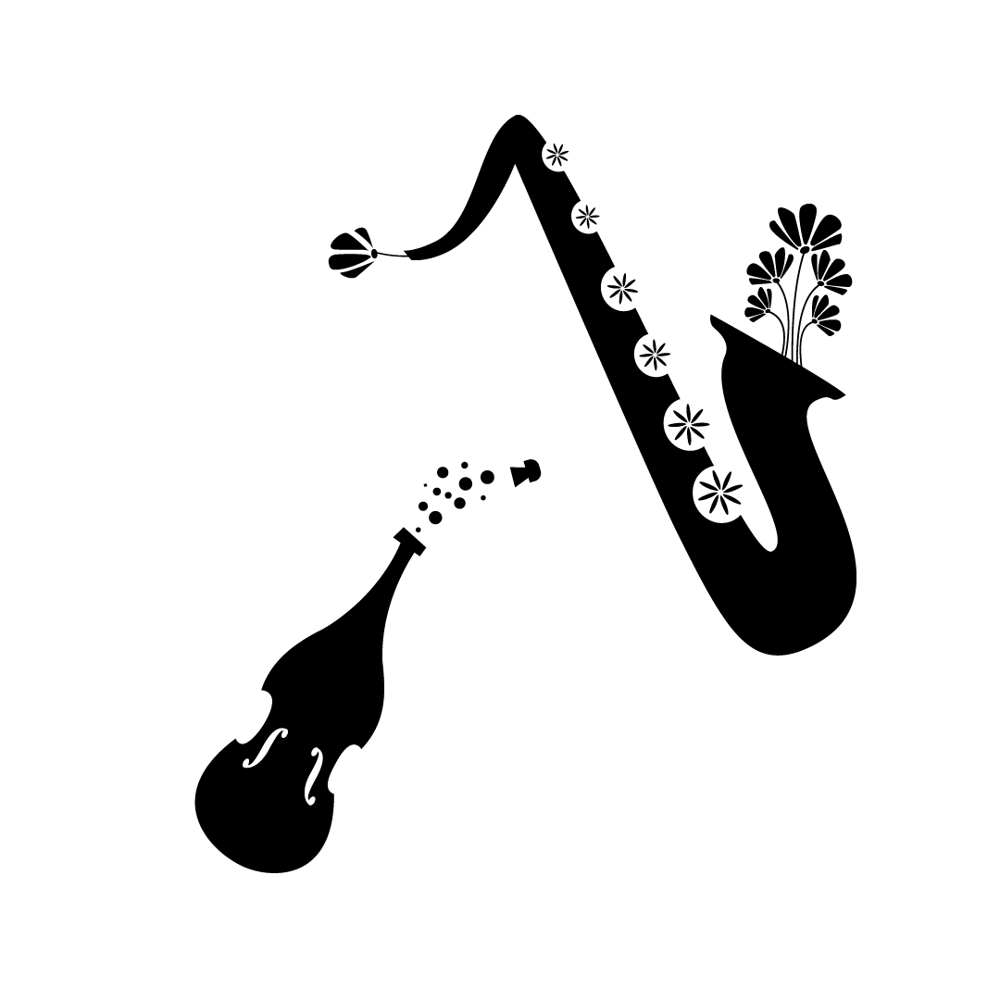
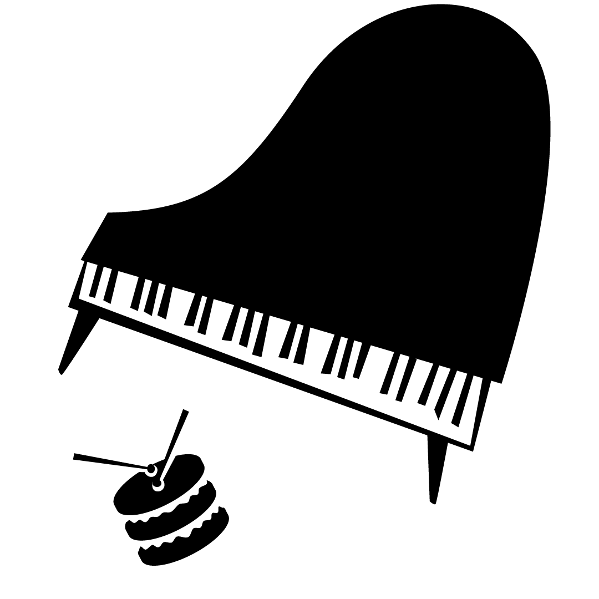
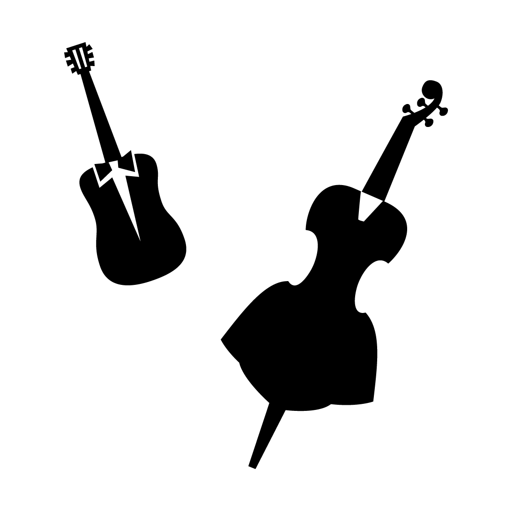
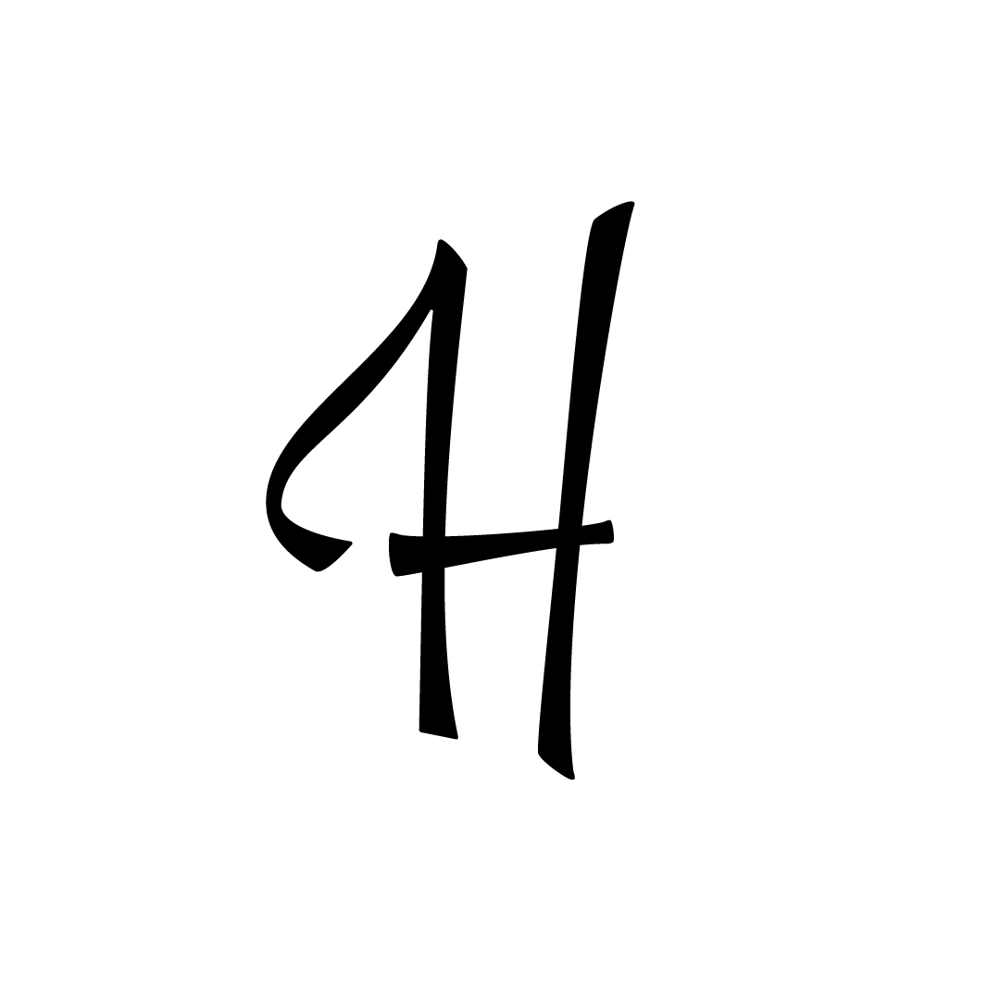
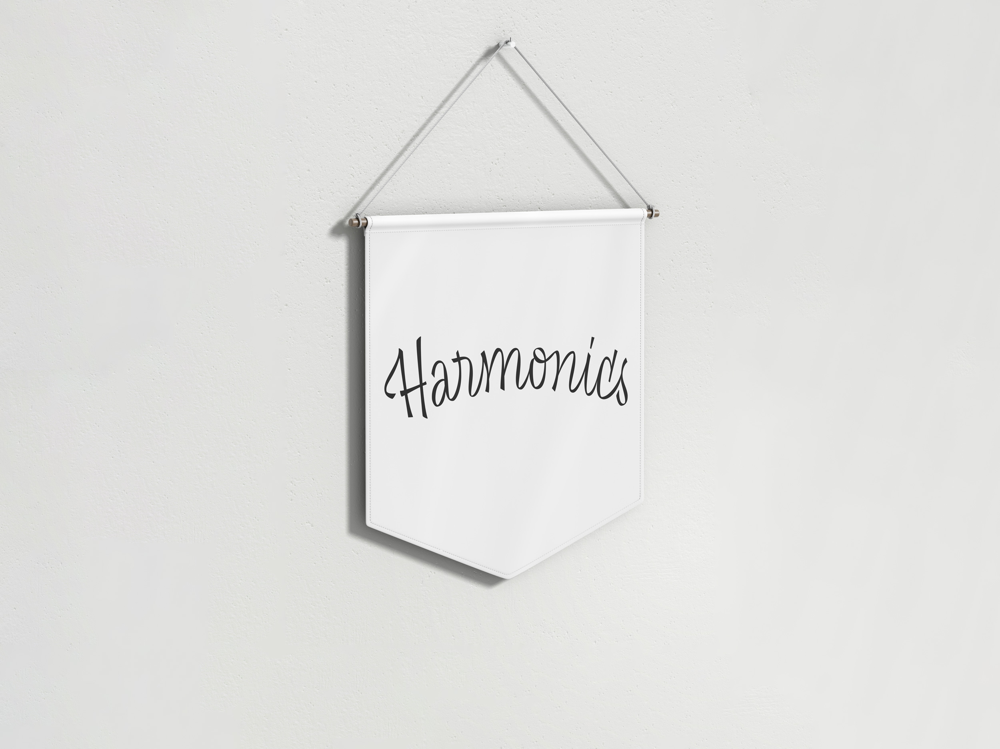
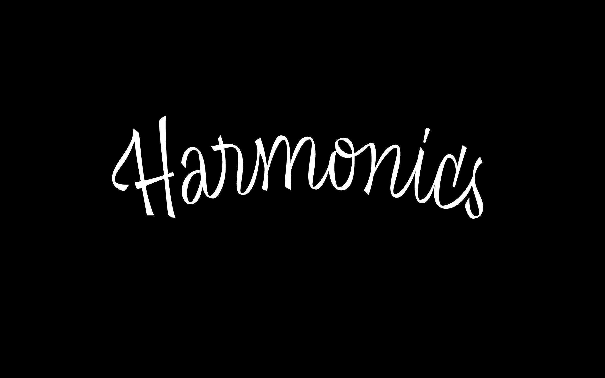
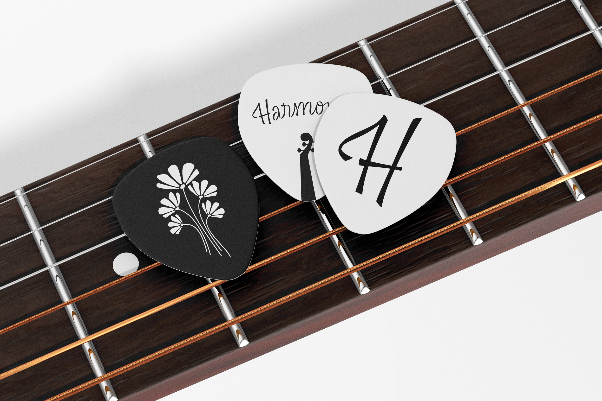
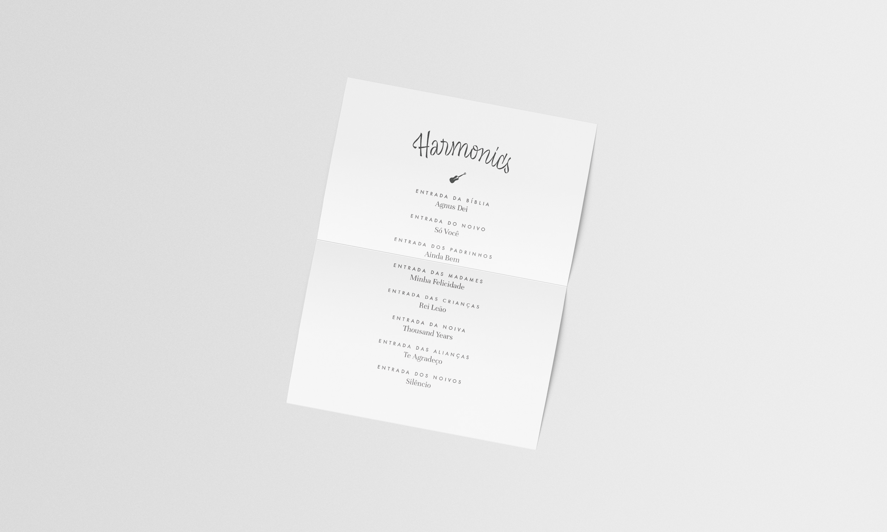
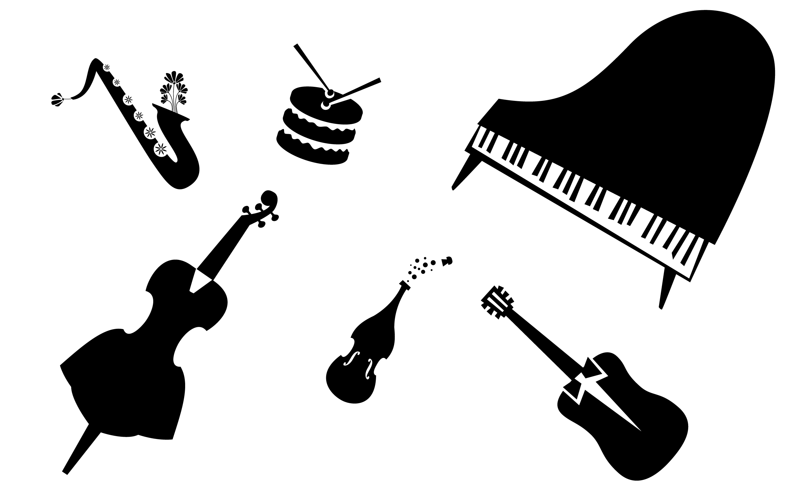